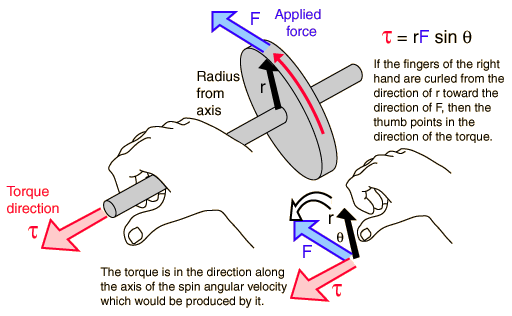

Right Hand Rule for TorqueTorque is inherently a vector quantity. Part of the torque calculation is the determination of direction. The direction is perpendicular to both the radius from the axis and to the force. It is conventional to choose it in the right hand rule direction along the axis of rotation. The torque is in the direction of the angular velocity which would be produced by it in the absence of other influences. In general, the change in angular velocity is in the direction of the torque.  |
Index Torque concepts Vector rotation examples | ||
|
Go Back |